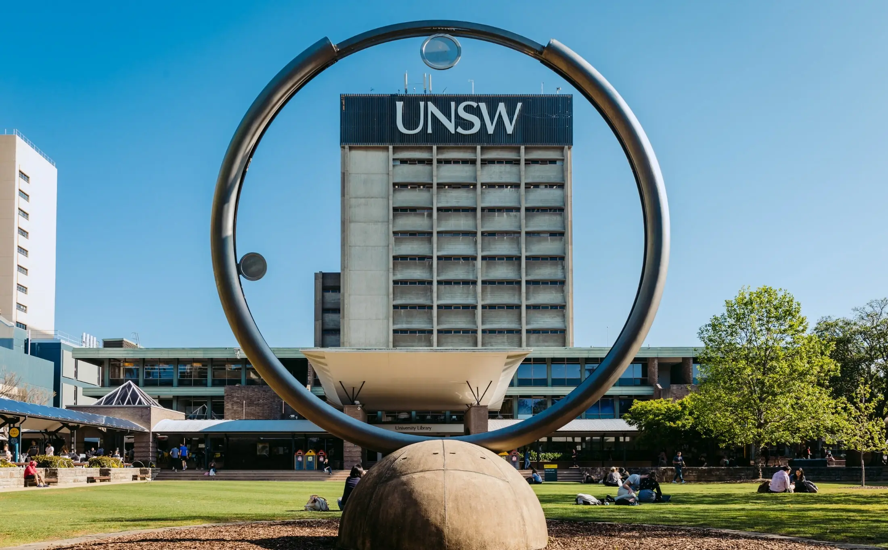

The University of New South Wales (UNSW Sydney) is a world-class public research university established in 1949. Ranked #19 globally in the 2027 QS World University Rankings, it is a founding member of Australia’s prestigious Group of Eight.